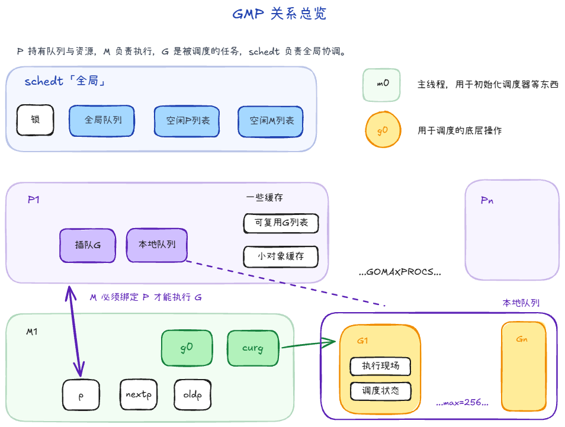
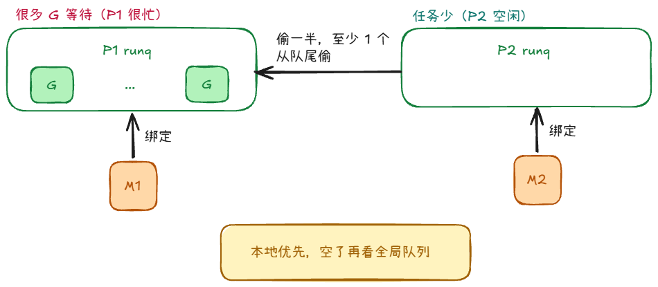
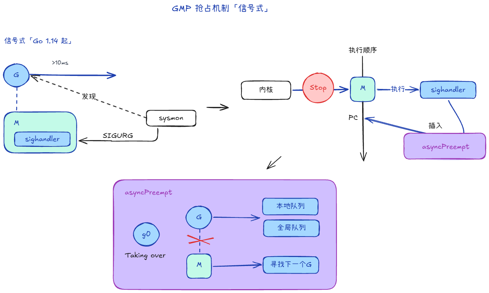
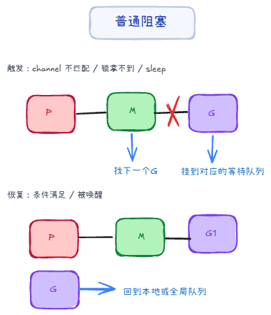
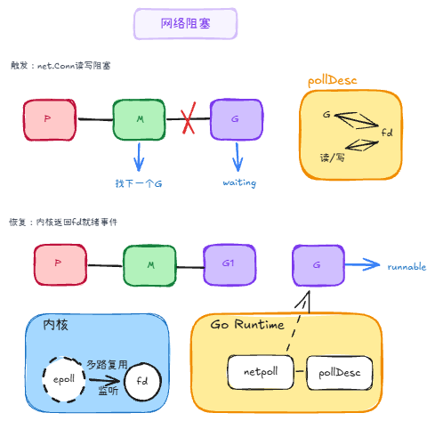
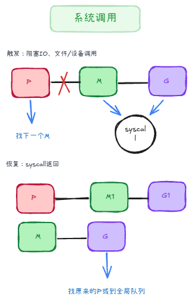

GO RUNTIME / GMP
Go GMP 调度机制
M 是工人，G 是任务，P 是工位与资源包，schedt 是全局调度中心。


G 对 runtime 来说是一份执行快照。它带着栈、PC、SP，也带着 runnable、running、waiting、syscall 等调度状态。
M 是 OS thread。业务 G 放在 curg 上运行；调度、切换、mcall 这类 runtime 工作通常走 g0 这条专用调度栈。
P 不是物理 CPU，而是运行 goroutine 需要的一组 runtime 资源。最关键的是本地运行队列。
M 绑定 P 后，先查本地 runq；本地没有，再看全局队列；还没有，就去别的 P 偷一部分 G。

协作式抢占依赖函数调用处的 stack check；Go 1.14 起，信号式抢占可以通过 SIGURG 和 asyncPreempt 主动把 G 抢下来。

channel、锁、time.Sleep 这类等待，通常阻塞的是 G。M 和 P 不解绑，继续去跑别的 G。

Read/Write 暂时不可进行时，G park，fd 与事件记录到 pollDesc。内核通知就绪后，netpoll 把 G 叫回队列。

长时间 syscall 会拖住 M，所以 runtime 在 entersyscall 路径释放 P，让其他 M 接管资源继续跑 runnable G。

理解 GMP，不是死记结构体，而是看清任务、线程、资源包和全局协调之间怎么配合。